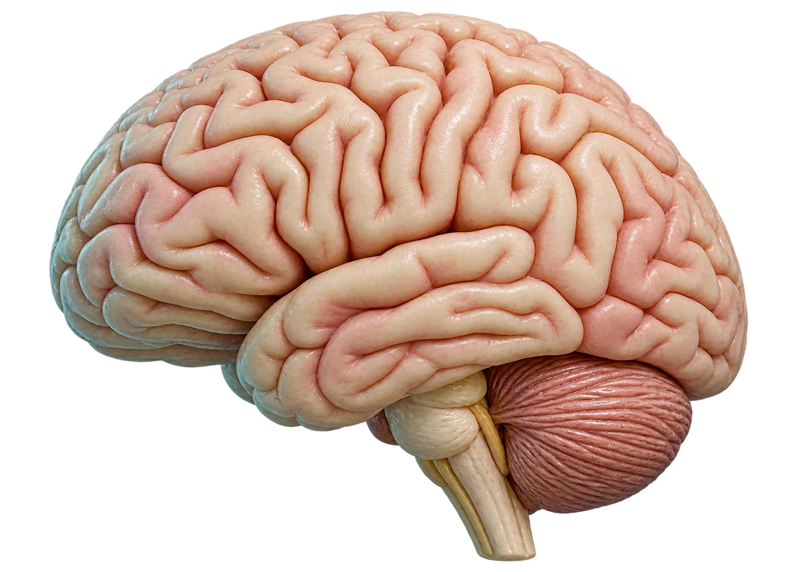

MEDLEX / CLINICAL TEAL
Nervous system
Interactive lesson29 slides · explore, recall, explain
 MedLexTHE LANGUAGE OF MEDICINE
MedLexTHE LANGUAGE OF MEDICINE Healthcare Crown Academy
Healthcare Crown AcademyMEDLEX / BATCH 03
Nervous
system
Learn the words, trace the relationships and explain the clinical meaning with precision.
29 slidesExplore · recall · applyClinical Teal

01 · CLINICAL HOOK
A word can change the story
Which terms describe the findings?
I know what I want to say,
but the words won’t come.”
Which terms describe the findings?
Start with the observation. Then choose precise clinical language.
02 · LEARNING OUTCOMES
Your route through the lesson
Explore the detail panels. Recall the meaning. Explain the distinction.
01 / Locate
Distinguish central and peripheral structures and describe signal direction.
02 / Decode
Identify roots, prefixes and suffixes; build and interpret common terms.
03 / Differentiate
Separate sensory, motor, language and disease vocabulary.
04 / Communicate
Expand common abbreviations and translate a short clinical note.
Source desk
[1] ↗03 · THE BIG PICTURE
One network. Two anatomical divisions.
Explore the detail panels. Recall the meaning. Explain the distinction.
Brain + spinal cord
Nerves + ganglia outside the CNS
Central nervous system
Integrates information and coordinates responses.
Peripheral nervous system
Connects the CNS with the rest of the body.
Anatomical classification: location. Functional classification: role.
04 · INTERACTIVE ANATOMY
Explore the brain
Explore the detail panels. Recall the meaning. Explain the distinction.
05 · MENINGES & CSF
Protecting the central nervous system
Explore the detail panels. Recall the meaning. Explain the distinction.
Meninges
Three protective membranes around the brain and spinal cord.
CSF
Cerebrospinal fluid cushions and supports the CNS.
Meningitis
mening + -itis → inflammation of the meninges.
Layer relationship diagram, simplified and not to scale.
06 · NEURONS & GLIA
Follow a signal
Explore the detail panels. Recall the meaning. Explain the distinction.
Neuron
A specialised cell that receives and transmits signals.
Myelin
An insulating sheath that helps rapid conduction along many axons.
Glia
Cells that support, protect and maintain the neural environment.
Map key
DendritesCell bodyMyelin sheathAxon →Axon terminalsSource desk
[8] ↗07 · DIRECTION & RESPONSE
Afferent arrives. Efferent exits.
Explore the detail panels. Recall the meaning. Explain the distinction.
08 · FUNCTIONAL LANGUAGE
Somatic and autonomic pathways
Explore the detail panels. Recall the meaning. Explain the distinction.
Somatic motor
Targets skeletal muscle; includes voluntary actions and reflexes.
Autonomic motor
Regulates cardiac muscle, smooth muscle and glands.
Enteric system
Neural networks within the gut; interacts with autonomic pathways.
| Autonomic division | Common teaching examples |
|---|---|
| Sympathetic | Increased heart rate; preparation for activity |
| Parasympathetic | Slower heart rate; support for digestion |
09 · THE DECODING METHOD
Read the word from its ending
Disease affecting multiple peripheral nerves.
Disease affecting multiple peripheral nerves.
1 / Identify the suffix
-pathy tells you the broad type of condition.
2 / Find the root
neur identifies the structure involved.
3 / Add the prefix
poly- modifies the extent: many.
The combining form is a root plus a combining vowel, commonly o.
10 · FLIP TO RETRIEVE
The core combining forms
Explore the detail panels. Recall the meaning. Explain the distinction.
11 · MORE WORD PARTS
Location, sensation and language
Explore the detail panels. Recall the meaning. Explain the distinction.
| Combining form | Meaning | Clinical connection |
|---|---|---|
| cephal/o | Head | Cephalalgia: headache |
| crani/o | Skull | Craniotomy: incision into the skull |
| cerebell/o | Cerebellum | Cerebellar: pertaining to the cerebellum |
| esthesi/o | Sensation | Anaesthesia: loss of sensation |
| phas/o | Speech / language | Aphasia: impairment of language |
| gli/o | Glial cells | Glioma: tumour arising from glial lineage |
12 · COLOUR-CODED MODIFIERS
Prefixes change the message
Explore the detail panels. Recall the meaning. Explain the distinction.
13 · PATTERNS TO RECOGNISE
Suffixes name the condition
Explore the detail panels. Recall the meaning. Explain the distinction.
| Suffix | Meaning | Example |
|---|---|---|
| -itis | Inflammation | Neuritis |
| -algia | Pain | Neuralgia |
| -pathy | Disease / disorder | Neuropathy |
| -paresis | Weakness / partial paralysis | Hemiparesis |
| -plegia | Paralysis | Hemiplegia |
| -oma | Tumour | Meningioma |
14 · INTERACTIVE WORD LAB
Build it. Then explain it.
Select a root and an ending.
15 · SIGNS & SYMPTOMS
Sensation has its own vocabulary
Explore the detail panels. Recall the meaning. Explain the distinction.
16 · MOTOR LANGUAGE
Weakness, paralysis and coordination
Explore the detail panels. Recall the meaning. Explain the distinction.
| Term | Plain-language meaning |
|---|---|
| Paresis / plegia | Weakness / paralysis |
| Hemiparesis / hemiplegia | Weakness / paralysis affecting one side |
| Paraplegia | Paralysis affecting the lower limbs; trunk involvement varies |
| Tetraplegia (quadriplegia) | Paralysis affecting all four limbs; trunk involvement varies |
| Ataxia | Impaired coordination of movement |
| Tremor | Involuntary rhythmic oscillating movement |
Source desk
[7] ↗17 · HIGH-VALUE DISTINCTIONS
Language is different from articulation
Explore the detail panels. Recall the meaning. Explain the distinction.
18 · DISEASE VOCABULARY
Inflammation, injury and degeneration
Explore the detail panels. Recall the meaning. Explain the distinction.
Meningitis / encephalitis
Inflammation of the meninges / brain tissue, respectively.
Peripheral neuropathy
Damage or dysfunction of peripheral nerves; many possible causes.
Multiple sclerosis (MS)
Immune-mediated CNS disease involving myelin and other neural structures.
Parkinson disease
A neurodegenerative disorder commonly associated with bradykinesia, rigidity and tremor.
19 · EPISODES & TIMING
Seizure vocabulary without assumptions
Explore the detail panels. Recall the meaning. Explain the distinction.
Seizure
A transient episode caused by abnormal excessive or synchronous neuronal activity in the brain.
Epilepsy
A brain disorder with a persistent predisposition to epileptic seizures. A single seizure does not automatically establish epilepsy.
Before a seizure
During a seizure
After a seizure
20 · DIAGNOSTIC LANGUAGE
Tests: activity, structure or fluid?
Explore the detail panels. Recall the meaning. Explain the distinction.
| Test | Full term | What it evaluates |
|---|---|---|
| EEG | Electroencephalography / electroencephalogram | Electrical activity of the brain |
| EMG | Electromyography | Electrical activity of muscles |
| NCS | Nerve conduction studies | Conduction in peripheral nerves |
| MRI | Magnetic resonance imaging | Detailed structural images |
| CT | Computed tomography | Cross-sectional images using X-rays |
| LP | Lumbar puncture | Access to lumbar subarachnoid space, often to collect CSF |
A test supports assessment. Its name alone does not establish a diagnosis.
21 · PROCEDURE WORD PARTS
Process, record and procedure
Explore the detail panels. Recall the meaning. Explain the distinction.
-graphy / -gram
Electroencephalography is the recording process; an electroencephalogram is the resulting record.
-tomy / -ectomy
Craniotomy creates an opening in the skull; craniectomy removes a portion of skull.
Neurologist / neurosurgeon
A neurologist evaluates and treats nervous system disorders; a neurosurgeon provides operative and other surgical specialty care.
22 · CLINICAL SHORTHAND
Read abbreviations in context
Explore the detail panels. Recall the meaning. Explain the distinction.
23 · GUIDED APPLICATION
Translate the clinical note
Explain this to a patient’s family in plain English.
Urgent CT brain requested.
Level of consciousness documented.”
Explain this to a patient’s family in plain English.
Reveal a model translation
There is new weakness on the right side and difficulty with language. An urgent computed tomography scan of the brain has been requested. The team has recorded how alert and responsive the person is.
What can you conclude?
These are new neurological findings requiring emergency assessment. The note does not establish stroke subtype, cause, severity or treatment.
24 · RAPID PRACTICE
Retrieve before you reveal
Explore the detail panels. Recall the meaning. Explain the distinction.
25 · ASSESSMENT 1 OF 2
Exit check · decode
Explore the detail panels. Recall the meaning. Explain the distinction.
26 · ASSESSMENT 2 OF 2
Exit check · apply
Explore the detail panels. Recall the meaning. Explain the distinction.
27 · CONSOLIDATE
From word parts to clinical meaning
Before you leave: teach one term back in 30 seconds.
Locate
CNS versus PNS. Brain versus skull. Nerve versus nerve root.
Decode
Begin with the suffix. Identify the structure. Apply the prefix and context.
Differentiate
Weakness versus paralysis. Language versus articulation. Electrical testing versus imaging.
Before you leave: teach one term back in 30 seconds.
Source desk
[1] ↗28 · VERIFIED SOURCES
Reference library
Explore the detail panels. Recall the meaning. Explain the distinction.
Linked sources support the numbered citations on each slide. Checked 19 October 2026; this is an educational terminology module, not a treatment guideline.
Original writing and original SVG teaching illustrations. Word-part and selected curriculum adaptations: WisTech Open, Medical Terminology 2e (2024), CC BY 4.0. No external scripts, fonts or image downloads are required.
ARTWORK & ATTRIBUTION
Teaching imagery combines generated raster artwork and symbols from the supplied Health Icons asset packs. Models and scenes are conceptual teaching aids. They are not diagnostic diagrams or patient images. Source desks retain attribution to OpenStax, Open RN and the clinical publishers used in the original lessons. No source endorsement is implied.
Explore · recall · explain
01 / 29
ONE ANNOTATION STANDARD
Pointer · interact with the lesson← → Navigate · A Tools · F Focus · Esc Exit
LESSON 06 / 08 · 29 SLIDESNext lesson: The senses →